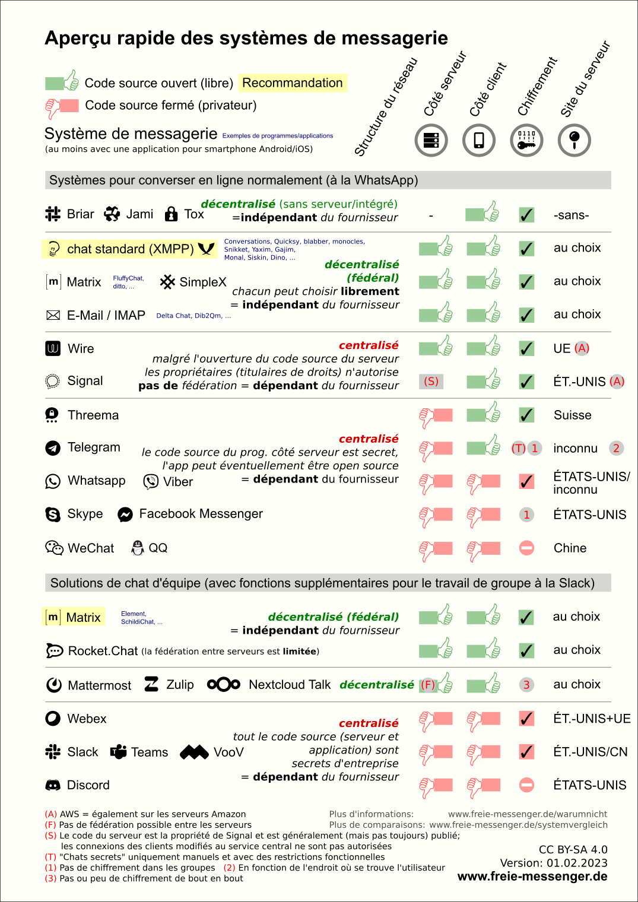
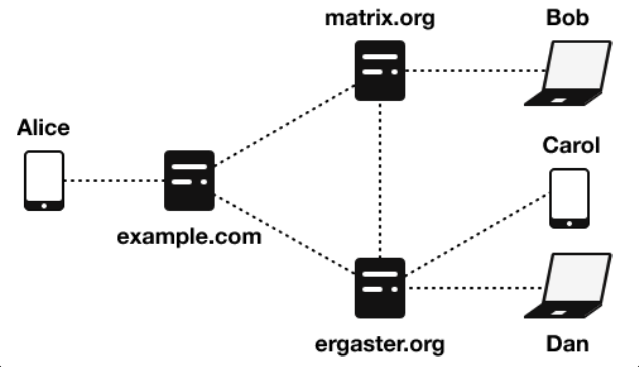
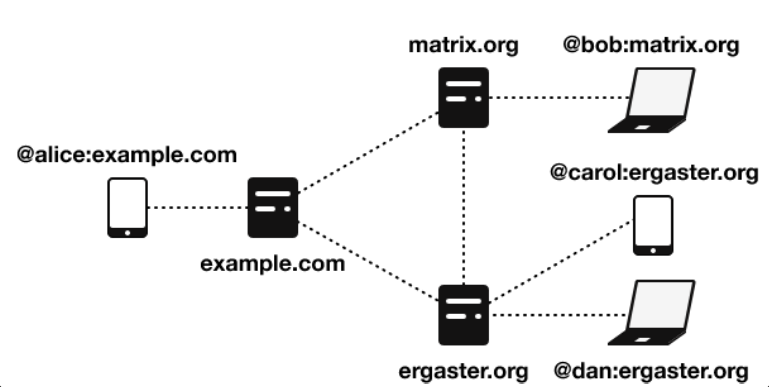
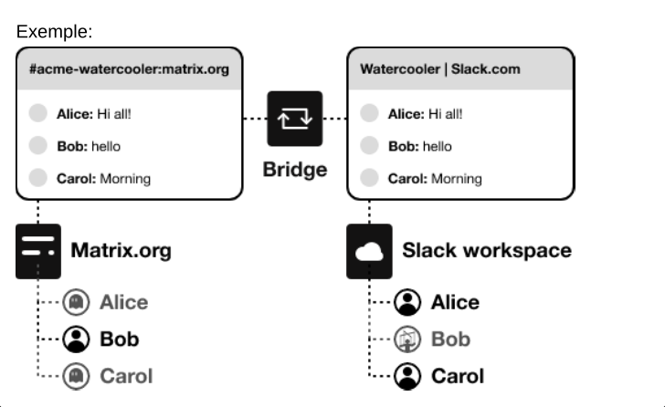
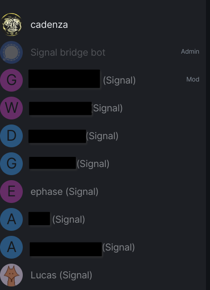
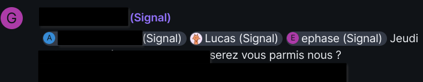
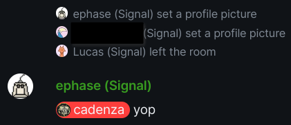

- Mon 08 April 2024
- Informatique
- #autohébergement, #web, #social, #docker, #tchat, #communication
Pour ceux qui ne connaissent pas Matrix, je le présente succinctement ainsi : c’est un outil messagerie moderne, qui est supérieure techniquement à toutes les autres solutions équivalentes (Instagram, WhatsApp, Messenger, Signal, WeChat, Telegram, Discord, etc …).
Mais ce n’est pas tout, en plus d’être très sécurisé, c’est aussi une solution libre, éthique et décentralisée et en constante évolution grâce à une large communauté très impliquée dans cette solution de messagerie ultime en auto-hébergement.
Il n’y a donc absolument aucun argument en faveur des autres plateformes (même pour Signal et RocketChat oui oui) et dans un monde idéal l’humanité entière utiliserais Matrix comme solution unique de communication.
J’ajoute que tout bon dirigeant d’entreprise qui utilise une solution de tchat en interne devrait déployer Matrix pour sa société, tout autre choix sera finalement moins pertinent, voir dangereux. Le monopôle de Microsoft avec Teams n’est d’ailleurs pas un frein, car il est tout à fait possible d’intégrer des solutions de Visio comme Jitsi dans l’instance Matrix. Et une fois que nous avons goûté à l’outil, nous sommes rapidement convaincus.

Maintenant que les présentations sont faites, je vais expliquer dans cette note comment déployer simplement une instance avec Docker et surtout avec des Bridges.
Je précise que cette note est co-rédigée avec Lucas Assier, qui à également une expérience intéréssente avec Matrix de son côté !
Avant de débuter l’aventure, commencez par créer un compte Matrix. Réserver votre identifiant et profitez-en pour tester Matrix sur les serveurs d’Élement.
Qui utilise Matrix en 2024 ? 🗣
Quasiment personne, comme beaucoup d’outils libre, pas de gros marketing derrière. Même Signal, qui met pourtant les moyens, peine à concurrencer ses concurrents qui sont pourtant pas terribles, alors autant dire que Matrix n’est pas prêt de percer, mais patience, car contrairement aux autres, Matrix est pérenne dans le temps et sera là encore bien après eux (l’e-mail, xmpp et irc en témoignent).
Finalement, les seuls qui ont un intérêt à déployer Matrix, sont les entreprises, associations et organisations qui souhaitent disposer d’un outil de communication en interne. Pour les autres, on y retrouvera majoritairement des Geek qui ont la chance d’avoir les ressources et le temps pour maintenir cet outil.
Les Bridges ! 🏗
En plus de pouvoir choisir n’importe quel client (ce qui est déjà génial), Matrix a une fonction vraiment top : Les bridges !
Elle vous promet de récupérer vos messages des autres plateformes dans votre instance Matrix !
Il faut comprendre que les Bridges sont additionnels et heureusement, car il y a baleine sous gravillon, explication dans le chapitre suivant.
Le piège des Bridges 🚧
Après plusieurs mois d’utilisation des Bridges, je vais être honnête, c’est un calvaire et la maintenance est chronophage au possible. Les Bridges sont essentiellement des prototypes et plus nous en ajoutons plus c’est le chaos : la maintenance n’en devient que plus lourde.
Chaque Bridge à son lot de galère, c’est sans fin, il faut donc être déterminé à y consacrer beaucoup de temps !
Autrement, la meilleure alternative que je connaisse est Element-ONE, payant et avec seulement trois Bridges, mais c’est un début 😉
Déploiement basique avec Docker 🐳
Si vous êtes à l’aise avec Docker, alors la configuration suivante vous permettra de mettre en place votre instance Matrix. Pour les plus barbus, vous pouvez aussi jouer avec Ansible 🤓
La configuration générale ici est donc d’installer le moteur Synapse avec sa DB Postgres. Avec seulement ceci, vous pourrez bénéficier d’une instance Matrix qui tourne très bien.
Pour tout le reste, ce sont les Bridges, que vous pouvez simplement commenter pour ne pas les déployer dans un premier temps, (ou jamais ? 😤)
Docker compose file
version: '3'
services:
# Synapse
synapse:
image: matrixdotorg/synapse:latest
container_name: matrix-synapse
hostname: matrix-synapse
restart: unless-stopped
environment:
- SYNAPSE_CONFIG_PATH=/data/homeserver.yaml
volumes:
- /home/matrix/Synapse:/data
- /home/matrix/bridges:/bridges
- /tmp/test:/var/log
depends_on:
- matrix-db
ports:
- 8448:8448/tcp
- 8008:8008/tcp
matrix-db:
image: postgres
container_name: matrix-db
hostname: matrix-db
restart: unless-stopped
environment:
- POSTGRES_USER=synapse
- POSTGRES_PASSWORD=**********
- POSTGRESQL_PASSWORD=**********
- POSTGRES_DB=matrix
- POSTGRES_INITDB_ARGS=--encoding=UTF-8 --lc-collate=C --lc-ctype=C
volumes:
- /home/matrix/Postgres:/var/lib/postgresql/data
# BRIDGES CONTAINERS ##########
# Signal bridge
mautrix-signal:
image: dock.mau.dev/mautrix/signal
container_name: mautrix-signal
hostname: mautrix-signal
restart: unless-stopped
volumes:
- /home/matrix/bridges/signal/signald:/signald
- /home/matrix/bridges/signal/data:/data
ports:
- 29328:29328/tcp
depends_on:
- synapse
- signald
- signal-db
signald:
image: docker.io/signald/signald
container_name: signald
hostname: signald
restart: unless-stopped
volumes:
- /home/matrix/bridges/signal/signald:/signald
signal-db:
image: postgres
container_name: signal-db
hostname: signal-db
restart: unless-stopped
environment:
- POSTGRES_USER=mautrixsignal
- POSTGRES_DATABASE=mautrixsignal
- POSTGRES_PASSWORD=**********
volumes:
- /home/matrix/bridges/signal/Postgres:/var/lib/postgresql/data
# Discord bridge
mautrix-discord:
image: dock.mau.dev/mautrix/discord
container_name: mautrix-discord
hostname: mautrix-discord
restart: unless-stopped
volumes:
- /home/matrix/bridges/discord/data:/data
ports:
- 29334:29334/tcp
depends_on:
- synapse
# Whatsapp bridge
mautrix-whatsapp:
image: dock.mau.dev/mautrix/whatsapp
container_name: mautrix-whatsapp
hostname: mautrix-whatsapp
restart: unless-stopped
volumes:
- /home/bridges/whatsapp/data:/data
ports:
- 29318:29318/tcp
depends_on:
- synapse
# Facebook bridge
mautrix-facebook:
image: dock.mau.dev/mautrix/facebook
container_name: mautrix-facebook
hostname: mautrix-facebook
restart: unless-stopped
volumes:
- /home/matrix/bridges/facebook/data:/data
ports:
- 29319:29319/tcp
depends_on:
- synapse
# Instagram bridge
mautrix-instagram:
image: dock.mau.dev/mautrix/instagram
container_name: mautrix-instragram
hostname: mautrix-instagram
restart: unless-stopped
volumes:
- /home/matrix/bridges/instagram/data:/data
ports:
- 29330:29330/tcp
depends_on:
- synapse
# Telegram bridge
mautrix-telegram:
image: dock.mau.dev/mautrix/telegram
container_name: mautrix-telegram
hostname: mautrix-telegram
restart: unless-stopped
volumes:
- /home/matrix/bridges/telegram/data:/data
ports:
- 29317:29317/tcp
depends_on:
- synapse
# Slack bridge
mautrix-slack:
image: dock.mau.dev/mautrix/slack
container_name: mautrix-slack
hostname: mautrix-slack
restart: unless-stopped
volumes:
- /home/matrix/bridges/slack/data:/data
ports:
- 29335:29335/tcp
depends_on:
- synapse
# Wechat bridge
matrix-wechat:
image: lxduo/matrix-wechat
container_name: matrix-wechat
hostname: matrix-wechat
restart: unless-stopped
volumes:
- /home/heuzef/matrix/bridges/wechat/data:/data
ports:
- 17778:17778/tcp
depends_on:
- synapse
# Wechat agent
agent-wechat:
image: lxduo/matrix-wechat-docker
container_name: agent-wechat
hostname: agent-wechat
restart: unless-stopped
environment:
- WECHAT_HOST=wss://matrix-wechat/_wechat/
- WECHAT_SECRET=00000000000
volumes:
- /home/heuzef/matrix/bridges/wechat/hongli/:/home/user/matrix-wechat-agent
depends_on:
- matrix-wechat
Configuration de Synapse
Générer le fichier de config Synapse :
docker run -it --rm -v /home/matrix/Synapse/:/data -e SYNAPSE_SERVER_NAME=matrix.domain.tld -e SYNAPSE_REPORT_STATS=no matrixdotorg/synapse:latest generate
Ce fichier de configuration sera généré dans /home/matrix/Synapse/homeserver.yaml, plutôt simple à comprendre, voici quelques paramètres à modifier selon vos besoins :
max_upload_size: 100M
enable_registration: true
enable_registration_without_verification: true
app_service_config_files:
- /bridges/discord/data/registration.yaml
- /bridges/facebook/data/registration.yaml
- /bridges/instagram/data/registration.yaml
- /bridges/signal/data/registration.yaml
- /bridges/slack/data/registration.yaml
- /bridges/telegram/data/registration.yaml
- /bridges/wechat/data/registration.yaml
- /bridges/whatsapp/data/registration.yaml
Chaque fichier de configuration des bridges est similaire, les paramètres récurrents à modifier sont les suivants :
homeserver:
address: https://matrix.domain.tld
domain: matrix.domain.tld
address: http://<hostname>:<port>
hostname: 0.0.0.0
port: <port>
database:
type: sqlite3
uri: <bridge>-db.sqlite
permissions:
"*": relay
"matrix.domain.tld": user
"@votre-pseudo:matrix.domain.tld": admin
Maintenant, vous pouvez démarrer toute la tambouille : docker compose -f /home/matrix/docker-compose.yml up
Le premier lancement prend du temps, les fichiers de configuration et de registration.yaml doivent être générés par Synapse (n’anticipez pas leur création), confirmant que tout fonctionne correctement, ensuite, vous pouvez éditer les paramètres.
Vous aurez probablement une erreur de permission sur ces fichiers au lancement, ajustez simplement cela ainsi :
sudo chmod 644 /home/matrix/bridges/*/data/registration.yaml
Visioconférence
Si vous souhaitez utiliser la visioconférence, notez bien que cette dernière ne fonctionnera qu’en local sur votre réseau interne. Pour aller plus loin et profiter pleinement des fonctionnalités de la visioconférence, il vous faudra mettre en service un serveur TURN : Configuring a Turn Server - Synapse
Mon retour d’expérience sur les différents Bridges 📢
Vous remarquerez que la plupart des Bridges sont déployées via MAUTRIX. Ce n’est pas pour rien, car la plus grande panoplie est éditée par eux et ce sont aussi bien souvent les bridges les plus stables.
Pour rappel la liste des Bridges est diffusée sur le site officiel de Matrix.
De façon générale, la logique d’ajout d’un bridge est toujours la même :
-
Exécution du bridge
-
Depuis votre client Matrix préféré, rechercher le bot du bridge pour commencer une discussion avec lui
-
Dans le canal de discussion avec le bot taper
helppour afficher les actions possibles
Signal
Le Bridge de Signal est un peu lourd à mettre en place, car il réclame une DB à part (ce que je vous conseille vivement de faire pour les performances).
- Inviter @signalbot
- Enregistrez votre téléphone
register +33000000000 - Récupérer un jeton captcha sur le site dédié de signal
- https://signalcaptchas.org/registration/generate.html
- Récupérer le token situé juste après le signalcaptcha://signal-recaptcha-v2.
- Valider le code SMS
- Définir son nom :
set-profile-name VOTRE-NOM
Discord
Pour Discord, la première initialisation ne permet que de jongler avec les messageries privées, vous aurez ensuite besoin de jouer avec les commandes du bridges pour rejoindre les différents canaux (plus communément appelées “Serveurs Discord” par les Moldus) via leur identifiant unique.
Ensuite, c’est le gros dawa, si vous invitez une guilde assez grosse, vous allez vous retrouver avec autant de notification d’invitation à accepter que de catégories ! Bon une fois que c’est validé, vous êtes tranquille, mais faite très attention aux journaux qui vont être générés sur votre serveur, ça va très rapidement remplir l’espace disque s’il y a de l’activité sur vos canaux Discord !
-
Inviter @discordbot
-
Sur l’application mobile : paramètres de l’app > “Scanner le QR code”
-
Envoyer la commande au bot :
login-qr -
La commande
guilds statuspermet d’afficher les différents “Serveurs Discord”
Alors WhatsApp, pour faire simple, dispose d’une sécurité très désagréable qui consiste à déconnecter tous vos accès tiers après une semaine, super …
Cela concerne donc également votre Bridge qu’il vous faudra reconnecter avec un QRCode toute les semaines. Donc nous sommes bien forcé de conserver l’application officiel sur notre tel uniquement pour ça … voila voila … 👌
- Inviter @whatsappbot
- Sur l’application mobile : paramètres de l’app > “Scanner le QR QR”
- Envoyer la commande au bot :
login
Facebook et Instagram
Dans le même type de flood absurde que Discord, vous allez recevoir une notification d’invitation à accepter pour chaque personne … J’espère pour vous que vous êtes un asocial avec peu d’amis sur ces plateformes, sinon vous aller user votre souris à accepter des centaines d’invitations une par une. Un conseil, tester bien vos volumes docker, le redémarrage du Bridge à tendance à tout remettre à zéro, histoire de vous pousser au suicide une bonne fois pour toutes 😖
Telegram
Un peu plus long à mettre en place, le bot étant encore en prototype au moment de mon test, mais ensuite, cela fonctionne correctement.
Sur la configuration, il est nécessaire d’ajouter une clef d’API récupérable sur : https://my.telegram.org/apps
App api_id: 00000000
App api_hash: 00000000000000000000000000000000
- Inviter @telegrambot
- Sur l’application mobile : paramètres de l’app > “Scanner le code QR”
- Envoyer la commande au bot :
login-qr
La palme d’or de la torture revient à nos amis Chinois avec leur outil abominable.
Créé par un nerd Chinois répondant au nom de lxduo, ce dernier (probablement considéré par un terroriste par le gouvernement chinois), a eu la patience de mettre au monde un Bridge capable de s’accoupler avec cette horreur de WeChat.
Ce qui donne naissance à une terrible usine à Gaz qui vous servira d’hôte, qui vous faudra accompagner d’autant d’usines à gaz supplémentaire que vous souhaitez ajouter de compte WeChat … Le gros délire en termes de consommation de ressource 😭.
Bon dans mon cas je n’ai même pas réussi à le faire tomber en marche et à vrai dire, j’ai sûrement été banni de l’outil par le gouvernement car impossible de me créer un compte, j’ai donc renoncé. Je prévois un voyage en Chine en 2024, je vais en profiter pour me créer un compte en catimini avec un numéro sur place, je ferais peut-être un article à ce sujet un jour si c’est croustillant.
- Inviter @wechatbot
- Sur l’application mobile : paramètres de l’app > “Scanner le code QR”
- Envoyer la commande au bot :
loginpour tenter de détecter l’agent WeChat
SMS
En bonus, j’ai tenté l’utilisation de SmsMatrix, une application Android qui peut fonctionner avec un Bridge, j’ai fait fonctionner le machin ainsi :
S’authentifier sur le compte @smsbot:matrix.domain.tld et inviter son compte utilisateur pour créer un canal de discussion. Après autorisation, installer SmsMatrix sur votre téléphone :
Bot Username : smsbot
Bot Password : **********
Homeserver url : https://matrix.domain.tld
Your username @<USER>:matrix.com
Devicename : <NOM-DU-TEL>
Il suffit ensuite de recevoir un SMS pour initialiser une conversation.
Conclusion 🗒
-
Matrix, c’est le top du top de la messagerie. Tant sur l’aspect technique qu’éthique.
-
Peu de personne connaissent et n’utilisent ça dans le monde pro et encore moins ailleurs.
-
La configuration d’un serveur TURN supplémentaire est nécessaire si vous souhaitez profiter de la Visioconférence.
-
La configuration des Bridges est très chronophage et instable.
C’est tout pour moi 😉 je vous relais maintenant les notes de mon ami Lucas Assier, qui souhaite également partager son expérience avec Matrix. Sans aller aussi loin que moi sur la quantité de Bridge testés, il a cependant abordé le Double Puppetting, très intéressant pour profiter pleinement des Bridges.
L’article ci-dessous, rédigé par Lucas Assier, date de Septembre 2023.
Pourquoi Matrix
À cela plusieurs raisons et cas d’usages :
-
En premier, les communications sont chiffrées, dans la mesure du possible, par design, ce qui permet de discuter avec des amis de sujets sensibles sans avoir à se soucier de voir nos communications et pièces jointes sur un CDN random (N’est-ce pas Discord ?).
-
En second, le système de fédération : un utilisateur d’un serveur peut communiquer sur un serveur différent de manière transparente. J’ai pu voir cela l’an dernier sur l’instance de visioconférence de la Fosdem qui n’est autre qu’une instance Matrix avec un plugin jitsi
-
Le système de bridges : Le protocole de serveur Matrix a été pensé pour inclure un système de “passerelles” permettant de lier un service quelconque a Matrix. C’est notamment ce système qui m’a poussé à passer le pas et à déployer ma propre instance Matrix.
Terminologie
Provider
Matrix, c’est un peu comme le système de mails, il faut un fournisseur ou provider pour pouvoir communiquer. Pour cela, un homeserver va leur donner un compte, exemple :

Homeserver
Un homeserver est un serveur Matrix (Synapse, Conduit, etc …).
Il est lié a un seul domaine qui n’est pas voué a changer. Les comptes générés via les homeserver sont en deux parties comme suit :
@user@homeserver.tld
Pour reprendre l’exemple ci-dessus, cela donnerait :

AppService
C’est ce que l’on peut comparer à un bot standard. Les AppServices doivent être enregistrés dans la configuration du serveur, il n’est pas possible de les enregistrer à la volée.
Bridges
Un bridge est un système permettant de connecter un groupement Matrix à une autre plateforme, par exemple, Slack ou encore Signal.
Les bridges fonctionnent de deux manières :
-
Dans Matrix, les utilisateurs des autres plateformes sont vus en tant que “ghost“.
-
Dans l’autre plateforme, les comptes utilisateurs de Matrix sont appelés des “puppets“.
Exemple :

Les spécifications Matrix sont complexe mais entièrement documentées ici.
Choisir son serveur
Aujourd’hui, Matrix possède plusieurs implémentations serveurs plus ou moins aboutis. Il y en a trois qui en ont retenu mon attention :
-
Synapse - la référence originale en python. C’est le seul projet de serveur marqué comme stable.
-
Conduit - une implémentation en RUST du protocole serveur de Matrix mais avec une empreinte mémoire plus faible.
-
Dendrite - la même volonté que Conduit, mais en GO. Certaines fonctions sont manquantes, la priorité étant l’implémentation des fonctions pour les instances single user.
Monter son homeserver
Préparations
Pour des raisons pratiques, nous allons assumer que le serveur retenu est Synapse (car officiel et implémente l’intégralité des fonctionnalités). En premier lieu, il faut réfléchir à un nom de domaine, c’est très important car il est impossible de le changer une fois le serveur installé.
Ensuite, il y a plusieurs manières d’installer un serveur Synapse :
-
Via un package manager
-
Via Ansible
-
Via Docker
Ici, nous verrons via Docker.
La stack technique de la démo
Un reverse-proxy
Initialement, le projet est déployé dans une colocation de homelabs derrière un seul et même port.
Par conséquent, nous passons par Caddy afin de faire le routage en reverse-proxy.
Cela, peut-être contraignant, mais il est quand même nécessaire d’en avoir un avec Synapse, notamment quand on va vouloir faire de la délégation.
Une instance Docker
Pour héberger le serveur ainsi que les bridges, le serveur et les bridges seront en deux stacks Docker-compose séparés.
Déployer le serveur Synapse
version: '3'
services:
synapse:
container_name: synapse
image: docker.io/matrixdotorg/synapse:latest
restart: unless-stopped
environment:
- SYNAPSE_CONFIG_PATH=/data/homeserver.yaml
volumes:
- synapse-data:/data
depends_on:
- synapse-db
ports:
- 8448:8448/tcp # Federation Traffic
- 8008:8008/tcp # Client Traffic
networks:
- default
- bridgenet
synapse-db:
container_name: synapse-pgsql
image: docker.io/postgres:12-alpine
environment:
- POSTGRES_USER=synapse
- POSTGRES_PASSWORD=changeme!
- POSTGRES_DB=synapse
- POSTGRES_INITDB_ARGS=--encoding=UTF-8 --lc-collate=C --lc-ctype=C
volumes:
- synapse-pgsql:/var/lib/postgresql/data
volumes:
synapse-data: {}
synapse-pgsql: {}
networks:
bridgenet:
name: synapse_bridges
external: true
À noter, nous avons un réseau Docker dédié a l’intercommunication entre Synapse et les Bridges installés comme suit :
docker network create synapse_bridges
En premier lieu, il faudra lancer Synapse pour lui dire de générer la configuration :
docker-compose run --rm -e SYNAPSE_SERVER_NAME=matrix.kestrel.ovh -e
SYNAPSE_REPORT_STATS=no synapse generate
En suivant, il faudra éditer la configuration homeserver.yaml dans le volume synapse-data.
Il sera important de regarder les options de configuration, notamment la configuration de la connexion à la base Postgres, le nom du serveur (server name), que les serveurs de clés de confiance ainsi que l’option pour autoriser la création de comptes ou non.
Une fois cela fait, nous pouvons démarrer la stack via docker compose up.
On pourrait faire en background mais comme nous en sommes à la phase de lancement initiale, je préfère laisser en premier plan afin de voir si l’application lance des erreurs ou non.
Configurer le reverse proxy et setup une délégation
Par délégation, nous sous-entendons relayer le trafic Matrix a une entité dans un sous-domaine ou ailleurs.
Ici, mon server name est kestrel.ovh, pour autant, le trafic est délégués vers matrix.kestrel.ovh via la configuration suivante :
kestrel.ovh {
header /.well-known/matrix/* Content-Type application/json
header /.well-known/matrix/* Access-Control-Allow-Origin *
respond /.well-known/matrix/server `{"m.server":
"matrix.kestrel.ovh:443"}`
respond /.well-known/matrix/client `{"m.homeserver":
{"base_url":"https://matrix.kestrel.ovh"}}`
}
matrix.kestrel.ovh {
reverse_proxy /_matrix/* 192.168.1.102:8008
reverse_proxy /_synapse/client/* 192.168.1.102:8008
}
Il existe une documentation sur la configuration de divers reverse-proxy pour Matrix, avec ou sans délégation. Pour tester si la configuration est correcte, on peut utiliser le testeur de fédération et voir si le trafic de fédération est OK.
Créer des comptes
Pour créer des comptes, il est possible de passer via une interface cliente Matrix tel que Element.
Pour les serveurs qui n’acceptent pas la création de comptes, il est possible de le faire via le conteneur Synapse via la commande suivante :
docker exec -it synapse register_new_matrix_user http://localhost:8008 -c
/data/homeserver.yaml
Synapse demandera quelques questions puis créera les comptes.
Personnellement, j’ai opté pour un compte admin dont je ne me sers uniquement pour l’administration du serveur ainsi qu’un utilisateur standard pour mon usage quotidien.
À ce stade, nous avons une instance Matrix fonctionnelle, avec un compte. Nous pouvons donc nous pencher sur l’ajout de Bridges !
Ajouter un Bridge
Le déploiement d’un Bridge peut être long et fastidieux, par conséquent, nous ne verrons que pour le Bridge Mautrix-signald
Docker Compose 2: Electric Boogaloo
version: "3.7"
services:
mautrix-signal:
container_name: mautrix-signal
image: dock.mau.dev/mautrix/signal
restart: unless-stopped
volumes:
- mautrix-signal-data:/data
- mautrix-signal-signald:/signald
depends_on:
- signald
networks:
- default
- bridgenet # Communication w/ Synapse
signald:
container_name: signald
image: docker.io/signald/signald
restart: unless-stopped
volumes:
- mautrix-signal-signald:/signald
mau-signal-db:
container_name: mau-signal-db
image: postgres:13-alpine
restart: unless-stopped
environment:
POSTGRES_USER: mautrixsignal
POSTGRES_DATABASE: mautrixsignal
POSTGRES_PASSWORD: changeme!
volumes:
- mautrix-signal-db:/var/lib/postgresql/data
volumes:
mautrix-signal-data: {}
mautrix-signal-signald: {}
mautrix-signal-db: {}
networks:
bridgenet:
name: synapse_bridges
external: true
Ici, pas énormément de choses à dire, on lance la DB, puis signald (en vérifiant que cela ne crash pas). Ensuite, on lance le Bridge qui crée un fichier de configuration.
Il faudra remplir le fichier avec les informations comme :
- L’adresse du serveur Synapse
- L’adresse du conteneur du bridge (Pour que Synapse relaie nos messages)
- Désactiver le manhole
- Régler les permissions
- Connecter la base postgres
Enregistrer une AppService dans Synapse
Une fois cela fait, on relance le conteneur. Si tout est correct, celui-ci va générer un fichier appservice.yaml
Il faudra le copier dans le volume du conteneur synapse et le référencer comme suit dans la configuration homeserver.yaml
# NB: Il est pas necessaire de faire de sous-dossiers appservices mais c'est
plus sympa.
app_service_config_files:
- /data/appservices/mau-signal.yaml
- /data/appservices/mau-instagram.yaml
- /data/appservices/mau-slack.yaml
Une fois ceci fait, relancer Synapse ainsi que le Bridge. Si tout fonctionne, le doit être joignable via message privé à l’adresse @signalbot:homeserver.tld
Se connecter à Signal
Pour se connecter à Signal, il faudra ouvrir un canal avec le bot, puis choisir une des deux options possibles :
**link** [device name] - Link the bridge as a secondary device
**register** <phone> - Sign into Signal as the primary device
Malheureusement, j’ai eu une erreur quand j’ai voulu “register”” donc je suis passé via “link”, le bot fournit un QR Code permettant de s’authentifier.
Une fois l’authentification effectuée, vous recevrez tout un tas d’invitations de messages privés et de canaux.
Ceux-ci sont gérés via le bot et font le lien avec toutes les conversations présentes sur Signal.
Par exemple, ici, un canal avec des amis :

À noter, le bot est présent dans chaque room afin de faire le lien. Il est possible de lui parler directement via
!signalou via MP. En gris, tous les utilisateurs ayant le tag(signal)sont des “ghosts” contrôlés par le bot.Il est bon de noter aussi que nous ne sommes pas administrateur du canal mais que les admins du groupe Signal le sont par extension sur ce canal Matrix.
Le Double Puppetting
Sur la capture d’écran précédente, nous avons pu voir que je possède deux comptes, un compte Matrix et un compte Signal.
On pourrait dire que l’on s’en fiche dans certains cas mais cela pose problème lorsque les gens veulent me mentionner.
Exemple ici :

Ici on me mentionne pour un événement. Problème, le Bridge mentionne mon compte Signal et non moi-même. Pour palier à cela, les développeurs ont ajouté une fonction permettant de remplacer le compte de la plateforme en question (Ici, Lucas(Signal) ) par mon propre compte Matrix.
Pour ce faire, il est possible de passer par deux manières de faire :
-
A la main via des “access tokens (à coup de
curlpuis via des MP aux différents bots de Bridge). -
Automatiquement via ce plugin. Pour des raisons évidentes, nous allons passer par le plugin.
Installer le module Shared Secret Authenticator
Pour installer le module, il faudra cloner depuis le dépôt GIT, le fichier python, puis l’ajouter aux volumes du conteneur synapse.
Cloner le dépôt : git clone https://github.com/devture/matrix-synapse-shared-secret-auth
Puis l’ajouter en tant que volume :
[...]
volumes:
- synapse-data:/data
- /opt/matrix-synapse-shared-secret-auth/shared_secret_authenticator.py:/usr/local/lib/python3.11/site-packages/shared_secret_authenticator.py
Générer un secret : pwgen -s 128 1
Puis, dans le fichier homeserver.yaml, saisir les informations recensées dans le GIT croisées avec la documentation de Mautrix.
modules:
- module: shared_secret_authenticator.SharedSecretAuthProvider
config:
shared_secret: "YOUR_SHARED_SECRET_GOES_HERE"
m_login_password_support_enabled: true
com_devture_shared_secret_auth_support_enabled: false
Une fois cela fait et le conteneur Synapse relancé, dans la configuration du Bridge Signal, remplacer :
double_puppet_server_map:
example.com: https://example.com
login_shared_secret_map:
example.com:
double_puppet_server_map:
kestrel.ovh: http://synapse:8008
login_shared_secret_map:
kestrel.ovh: YOUR_SHARED_SECRET_GOES_HERE
Ceci fait, relancer le conteneur Signal. Si cela fonctionne correctement, le compte en trop doit disparaître et les mentions envers ce compte sont maintenant redirigées vers l’utilisateur Matrix correct.
